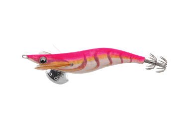
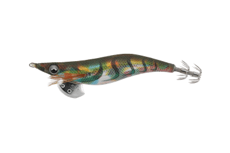
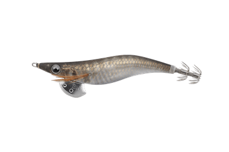
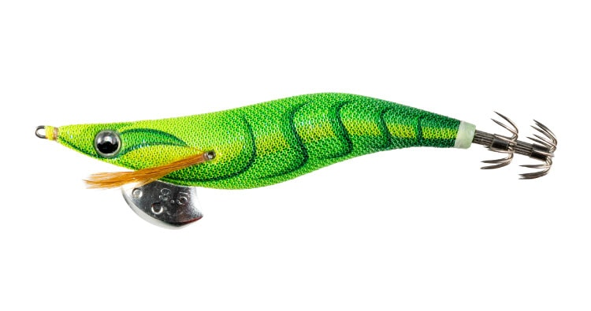
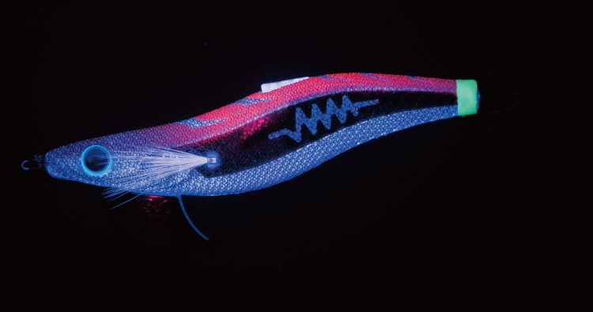

エギ王LIVE
（EGI-OH LIVE）
エギ王LIVEはYAMASHITA（ヤマシタ）のエギです。
先代「エギ王Q LIVE」のダート性能をさらに引き上げた、誰でも簡単にキレのあるダートが出せる軽快ダートモデル。ワイドなダートはそのままに前方への移動を33％抑えたので、ポイントを通り過ぎにくく、追ってきたイカにしっかりエギを見せられます。

画像出典:ヤマシタ公式HP
スペック
- メーカー
- YAMASHITA（ヤマシタ）
- タイプ
- エギ（ダートタイプ）
- サイズ
- 2号／2.5号／3号／3.5号
- 全長
- 60mm／75mm／90mm／105mm
- 重さ
- 6.5g／10g／15g／21g
- 沈下速度
- 約5.5秒/m（2〜2.5号）／約3.5秒/m（3号）／約3秒/m（3.5号）
- ターゲット
- アオリイカ
▼今すぐチェック

エギ王LIVEの特徴
キレのあるダートを、誰でも簡単に
-
スズ製のブレイドシンカー
環境負荷の少ないスズを使い、素材と形状を一から見直したブレイドシンカー。水を切り裂くようにキレのあるダートを生みます。側面にはウエイトチューン用のガイド穴もあります。
-
前に進みすぎないクイックダート
ダート幅はそのままに、前方への移動を33％短縮。50mキャストした場合、先代の150回に対して200回アクションでき、1キャストでより長くイカにエギを見せられます。
-
低重心で安定
重心を下げたことで運動性能が上がり、ダートやキャスト時の飛行姿勢が安定。目玉には490GLOWのカップを採用し、ワンポイントでイカを誘います。
エギ王LIVEの使い方
基本は連続シャクリでダートさせてからのフォール。軽くシャクるだけで左右にキレよくダートするので、2〜3回シャクったらラインを張ってフォールさせ、アタリを待ちます。
前に進みにくいので、イカが見えているポイントや狭いポイントでも、エギを長くとどめながら誘えます。
エギ王LIVEの得意な状況
活性の高いアオリイカを、ダートでスピーディーに誘いたいとき。秋の数釣りシーズンや、エギングを始めたばかりでダートを出すのが難しいと感じている人にもおすすめです。
ワンポイント
ダートで反応がないときは、フォールを重視したエギ王Kや、光と音でアピールするエギ王SEARCHとローテーションしましょう。
サイズの使い分け
| サイズ | 全長／重さ | 沈下速度 |
|---|---|---|
| 2号 | 60mm／6.5g | 約5.5秒/m。秋の小型のイカや、ライトなタックルに |
| 2.5号 | 75mm／10g | 約5.5秒/m。秋の新子シーズンに |
| 3号 | 90mm／15g | 約3.5秒/m。秋〜冬の基準サイズ |
| 3.5号 | 105mm／21g | 約3秒/m。春の大型狙いや深めのポイントに |
2号から3.5号まであるので、イカの大きさとシーズンに合わせて選べます。
オススメカラー
公式ラインナップから4色を紹介します（カラー名は公式の表記のまま）。

027 ピンクゴールドエギングのド定番カラー。ピンクと金ボディの組み合わせで、澄み潮のときに実績が高い。

030 オリーブマーブル暗いオリーブに虹ボディ。色の変化で抱き渋っていたイカの視覚を刺激します。

036 チラツキアジアジの生命感を引き立てる金のデザインホロ。鱗の隙間から光る490グローがイカを寄せます。

096 ワカバサンシャインEGI-OH Colorsのワカバちゃんカラー。グリーン系で目立たせたいときに。
画像出典:ヤマシタ公式HP
エギ王LIVEに似ているルアー
-
 エギ王K
ヤマシタ
詳細はこちら＞
エギ王K
ヤマシタ
詳細はこちら＞
ダートを抑えた低活性イカ攻略モデル。ダートで反応が渋いときに。
-

エギ王SEARCH ヤマシタ 詳細はこちら＞フラッシングとラトル音でアピールするモデル。活性の高いイカを広く探りたいときに。
-
 エギ政 改
DUO
詳細はこちら＞
エギ政 改
DUO
詳細はこちら＞
3号・16gのエギ。他メーカーのエギでローテーションしたいときに。